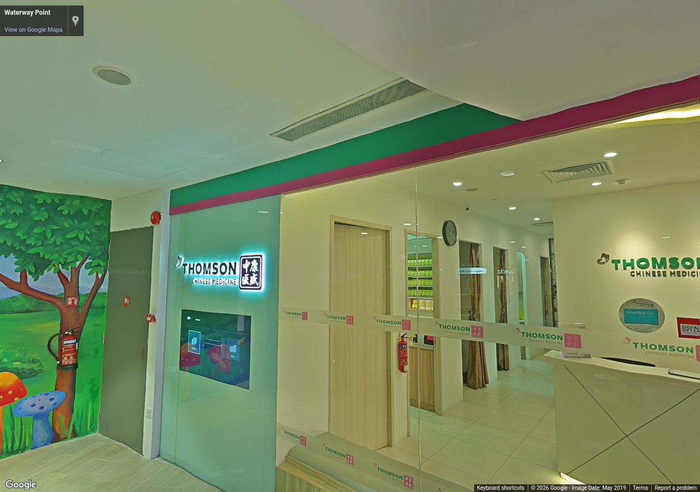
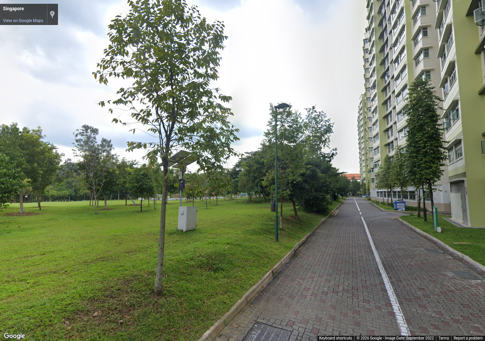

Source 2019-05, heading 20°, pitch 5°, zoom 1. Metadata / review

Source 2022-09, heading 100°, pitch 5°, zoom 1. Metadata / review
Authorized reference screenshots. Attribution retained. Open full-size images to review clarity; capture success alone is not visual acceptance.

